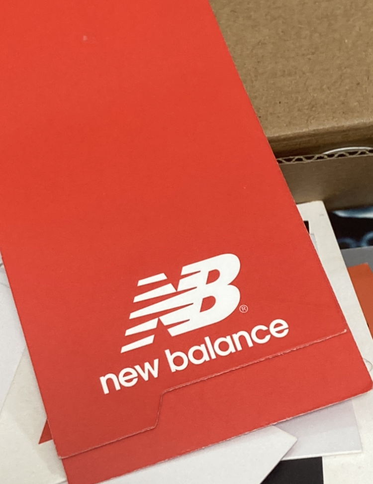
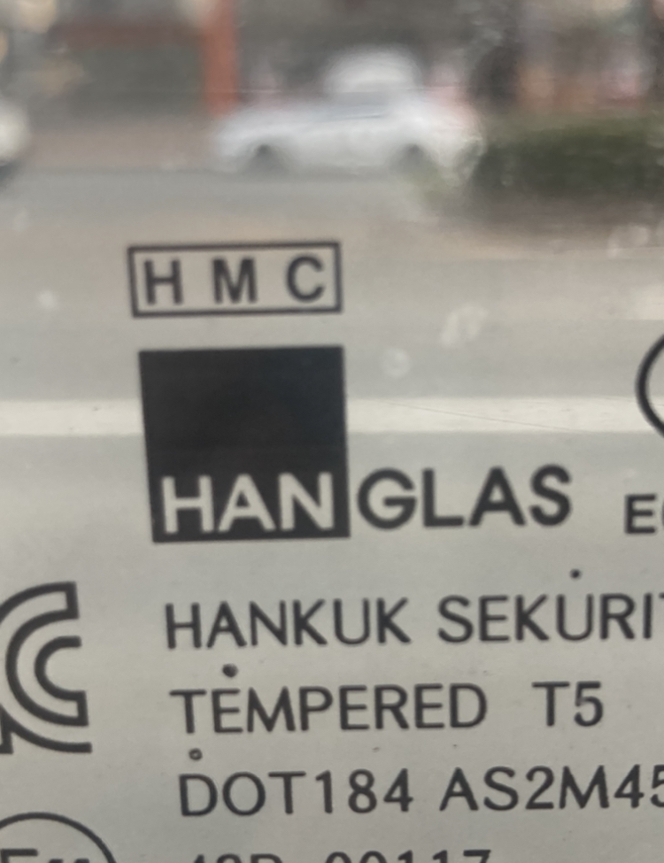
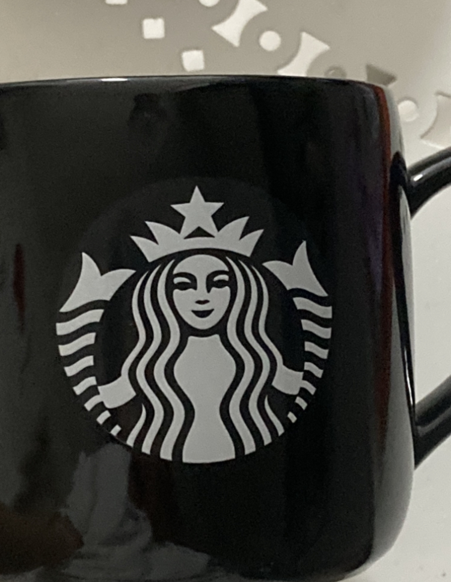
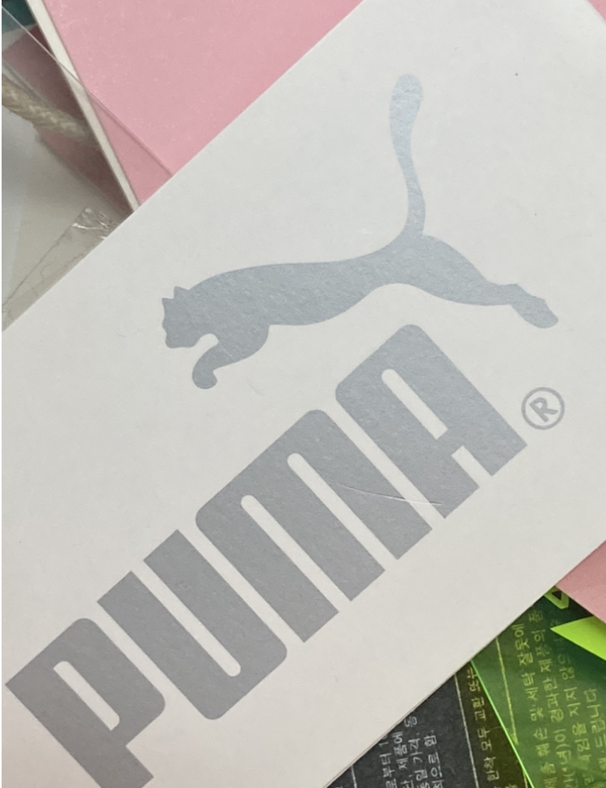
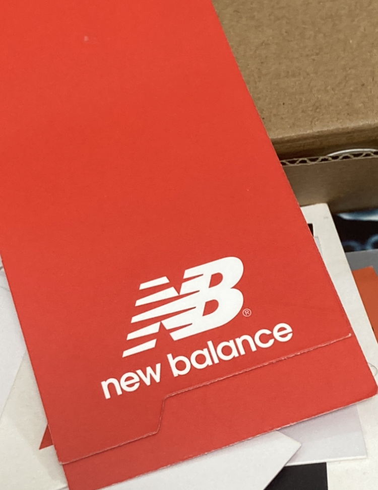
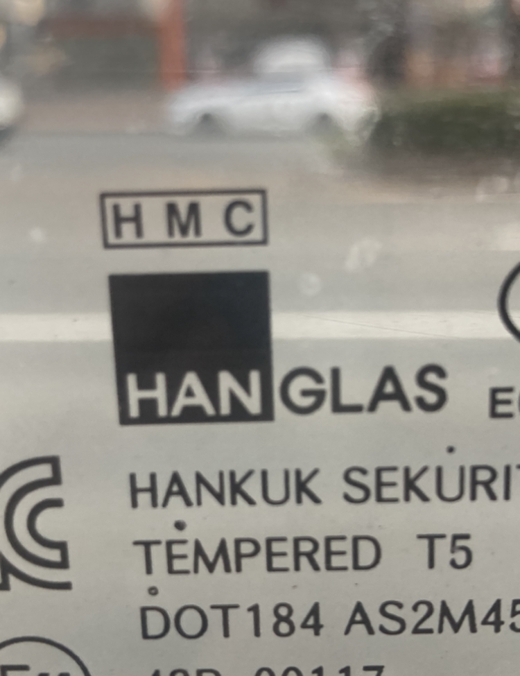
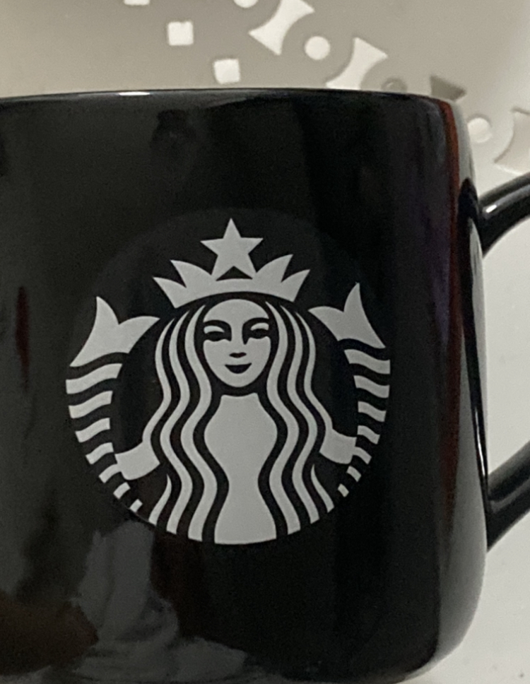
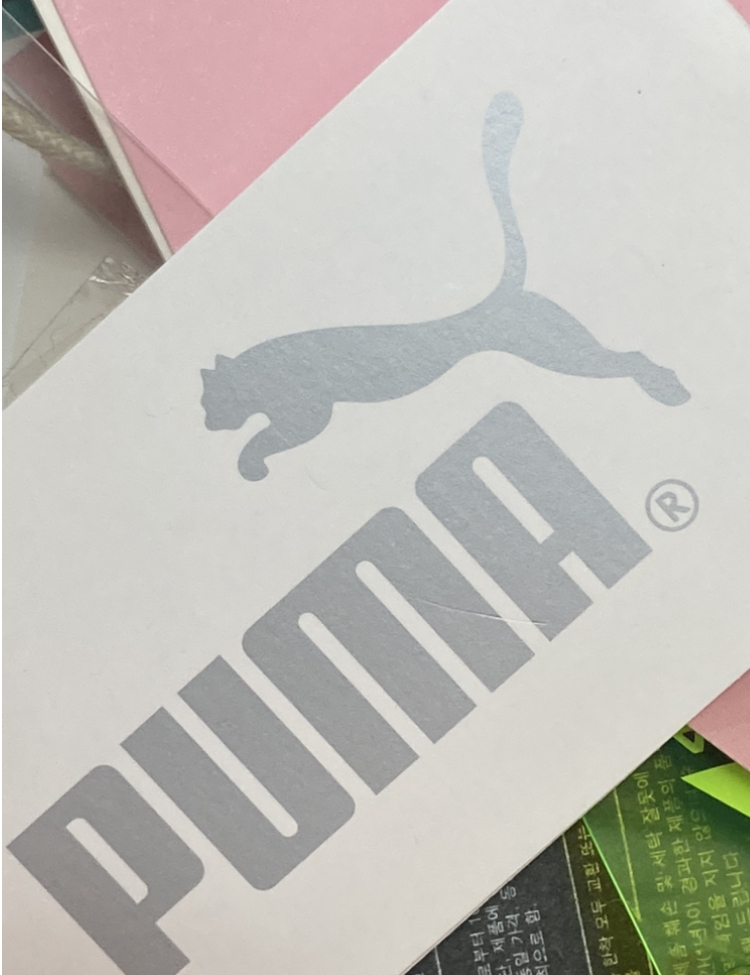
실루엣이란?
실루엣은 어두운 배경을 가진 대상의 윤곽이나 외형을 반영하는 그림이나 형태를 말한다. 보통은 대상의 외형만을 간결하게 표현하여 단순화된 형태로 그려지거나 나타난다. 실루엣은 주로 단순하지만 강렬한 시각적 효과를 가지고 있어서, 강조하고자 하는 대상을 명확하게 보여주는데에 사용된다. 실루엣은 보통 검정색으로 표현되지만, 다양한 색상으로도 나타난다.
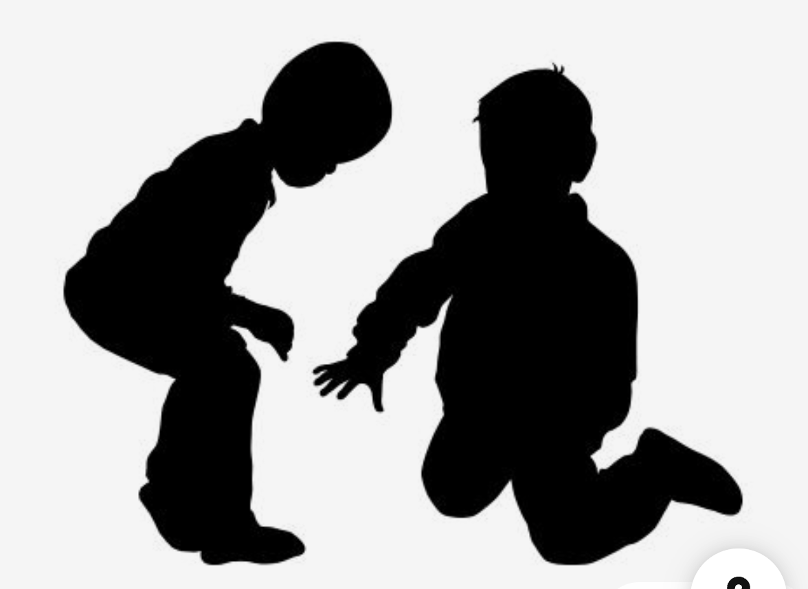 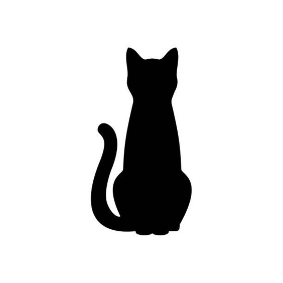실루엣의 역사와 특징
- 실루엣은 고대 그리스와 로마 시대부터 사용된 기법으로, 주로 인물 그림이나 동물 등의 윤곽을 단순화하여 표현한다.
- 현대에는 디자인과 예술 분야뿐만 아니라 광고, 마케팅, 영화 등 다양한 분야에서 쓰인다.
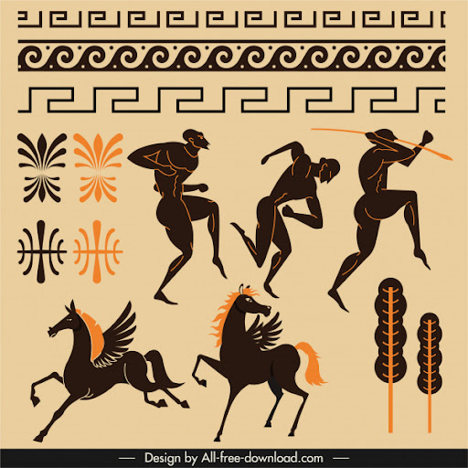실루엣의 효과
- 1.직관적인 인식
- 2. 유동적인 사용
- 3. 시간에 구애받지 않는 디자인
- 4. 상대적으로 저렴한 비용
- 5. 세계적 접근성
실루엣 로고와 심볼은 단순하고 명확한 형태 덕분에 쉽게 인식되고 기억된다. 복잡한 미세한 부분 없이도 핵심 이미지를 전달한다.
실루엣 디자인은 다양한 배경, 크기, 매체에서 다양하게 쓰인다. 인쇄물, 화면, 옷, 제품, 포장 등 어디에서나 동일한 효과를 나타낸다.
미니멀한 디자인은 유행에 덜 민감하여, 시간이 지나도 세련된 느낌을 유지한다. 따라서 브랜드의 정체성의 지속성을 보장한다.
인쇄나 제작 과정에서 색상과 미세한 부분이 적어 인쇄와 같은 곳에서 잉크를 덜 쓰이니 비용이 절감된다.
문화적 차이 없이 이해될 수 있는 보편적인 디자인이기에 국제적으로 브랜드를 알릴 때 유리하다.
위와 같은 효과를 얻기 위해 유명한 브랜드들은 실루엣으로 처리된 로고와 심볼을 이용한다. 간결하면서도 강렬한 시각적인 영향을 주기 위해 실루엣 로고 디자인이 자주 쓰인다.
나의 생각
애플, 나이키, 아디다스 등등 유명한 상표들을 보면 휘황찬란한 색감이나 선사용, 묘사가 없이 깔끔하게 실루엣 형태만을 나타낸다. 그러한 아이콘들을 보며 단순한 형태이지만 무게감 있고 대중적인 정체성을 유지하는 비법이 궁금해졌다. 특정 상징이나 아이콘 형태를 주제로 잡기보다 이를 나타내는 종류 중 하나인 ‘실루엣’을 주제로 형태를 조사했다. 형태의 외곽선을 따라 만들어진 로고는 다양한 스타일과 결합하기에 쉽고 국제적인 인식을 만들 수 있으며, 인쇄 등 여러 작업을 할 때에 비용절감 및 편리한 점이 많다는 점에서 실루엣 상징의 강력한 효과를 만들어낸다는 사실을 알아냈다. 무조건 알록달록하고 밀도 높은 것만이 시각적으로 이끌리고, 좋은 디자인이 아니라는 것을 깨닫는 시간이었다.
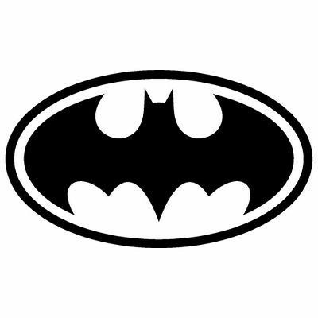